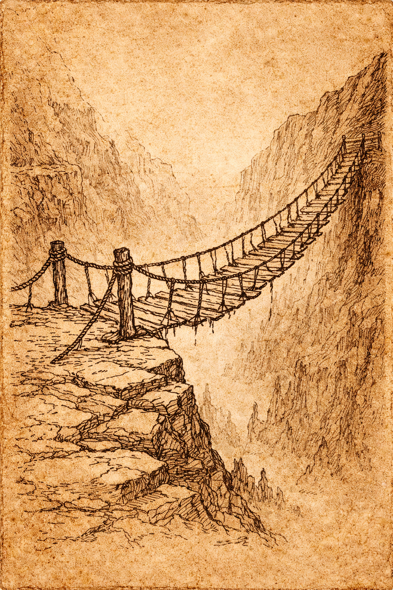
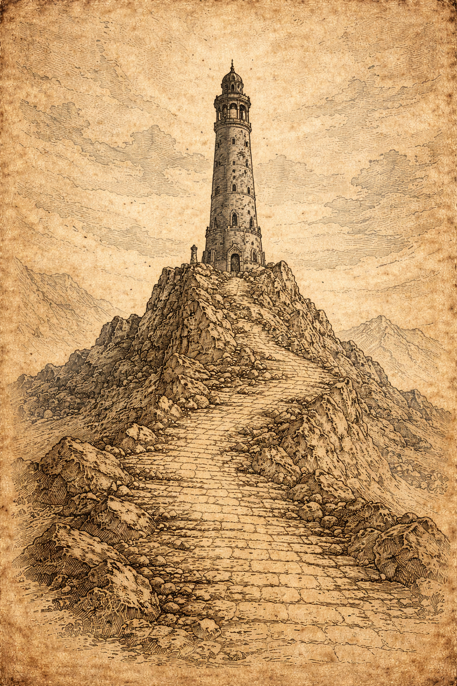
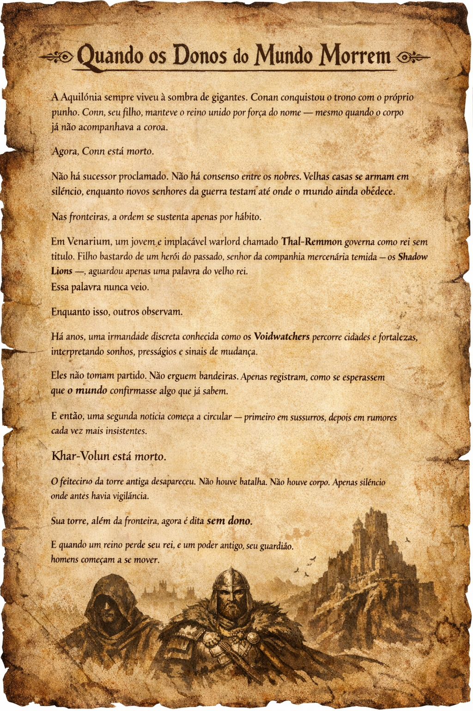

Um reino sem sucessor
Conn, filho de Conan, morreu sem sucessor proclamado. Venarium prospera sob Thal-Remmon. Nas Marchas, a ordem depende de homens armados, cidades inquietas e pactos que ninguem admite em voz alta.
Os personagens entram na historia antes que ela se torne guerra aberta: capazes o bastante para serem notados, vulneraveis o bastante para temer o preco de cada escolha.
Sistema: SWADE.
Inicio: Novice com 2 Avancos.
Tom: espada e feiticaria, fronteira brutal, politica em ruina e magia ruim de tocar.
Mesa em movimento
Comece aquiPremissa, tom e leitura minima antes da sessao.
Gerador de PCFormulario para montar e exportar o dossie do personagem.
Guia de criacaoBaseline, conceitos recomendados e perguntas de vinculo.
MundoAquilonia, Venarium, Karavazyan e a Torre.
RegrasResumo publico das regras de campanha em SWADE.
Handouts liberados



Esta pagina publica nao distribui PDFs comerciais nem notas privadas do Mestre. A wiki mostra apenas o que pode ser consultado pelos jogadores.